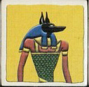
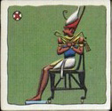
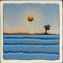
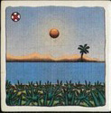
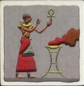
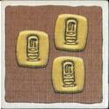
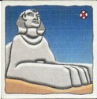

Coloque o tabuleiro no centro da mesa.
Coloque todos os tiles de jogo no saco.
Cada jogador pega 10 pontos em fichas de VP. Coloque o resto das perto do
tabuleiro.
Baseado no número de jogadores, ordene os sóis em grupos da seguinte forma:
2 jogadores: 9-6-5-2 ; 8-7-4-3
3 jogadores: 13-8-5-2 ; 12-9-6-3 ; 11-10-7-4
4 jogadores: 13-6-2 ; 12-7-3 ; 11-8-4 ; 10-9-5
5 jogadores: 16-7-2 ; 15-8-3 ; 14-9-4 ; 13-10-5 ; 12-11-6
Coloque a figura do Ra perto do tabuleiro.
O jogador com a maior soma de sóis começa; continue no sentido do relógio.
No turno do jogador, ele pode fazer exatamente uma das seguintes ações:
Compre e coloque um tile no tabuleiro
Jogue um tile de Deus
Invoque Ra
Um jogador sem sóis não pode realizar nenhuma ação no seu turno. Quando a trilha de
leilão está cheia, jogadores estão limitados a jogar tiles de Deus ou invocar Ra.
Quando um tile de Deus é jogado por um jogador, ele retorna o tile (de Deus) para caixa.
Um tile de Deus não pode ser usado para pegar um outro tile de Deus e/ou um tile de Ra
Quando um tile de Deus é utilizado para pegar um tile de desastre, o jogador deve
colocar o tile de desastre em sua área de ação e realizar imediamentente o efeito
do tile de desastre.
Um tile de Deus só pode ser jogado por um jogador enquanto ele ainda possui sóis
virados para cima.
Se todos os 8 tiles de leilão já estiverem no tabuleiro, um jogador não pode
comprar e nem colocar um tile. As únicas ações para esse jogador são jogar um tile
de Deus ou invocar Ra.
Se a trilha de tiles de leilão do tabuleiro estiver completa (oito tiles) e o
jogador escolher invocar Ra, TODOS os jogadores (inclusive o jogador que ativou o Ra)
podem dar lances ou podem PASSAR. Se todos os jogadores passarem, os tiles são remo
vidos do jogo.
Quando a trilha de tiles de Ra está completa, não há leilão. Neste caso, os tiles
na trilha de leilão são removidos e retornados para a caixa.
Quando um leilão é concluído, o jogador à esquerda do do jogador com o Ra continua
o jogo fazendo um turno normal.
Quando um Ra é invocado ou um tile de Ra é retirado do saco, o jogador deve pegar a
figura de Ra e colocar na frente dele e o leilão começará com o próximo jogador da
esquerda ao jogador com a figura de Ra.
Em um leilão, normalmente um jogador pode passar. Entretanto, se o leilão foi invocado
voluntariamente por por algum jogador, esse jogador DEVE obrigatoriamente fazer um lance se todos os
outros jogadores passarem.
Tiles removidos do jogo (que vão para a caixa) não podem ser examinados pelos jogadores.
No caso de um leilão involuntário, todos os jogadores podem passar. Nesse caso, todos
os tiles na trilha de leilão são descartados e voltam para a caixa.
Ao final de cada uma das três épocas, os jogadores recebem VP e mantêm seus VP
virados para baixo.
Deuses

Cada tile de Deus em jogo dá 2 pontos (VP) para o jogador que o possui.
O Tile volta
para a caixa.
Faraós

O jogador com mais tiles de faraós recebem 5 VP e jogador com menos tiles de faraós
perde 2 pontos. Se dois ou mais jogadores empatarem com mais ou menos tiles, cada
jogador (empatantes) ganha 5 VP ou 2 VP. Se todos os jogadores possum o mesmo
número de tiles de faraós, pontos não são perdidos e nem ganhos.
Os tiles NÃO voltam para a caixa.
Nilo


Cada tile de Nilo e cada tile de Nilo inundado valem 1 VP somente se o jogador
possuir pelo menos 1 tile de Nilo inundado.
Os tiles de Nilo inundados voltam para caixa e os tiles de Nilo NÃO voltam
para a caixa.
Civilização

Após cada época, se o jogador NÃO possui tiles de civilização, ele perde 5 VP.
Se o jogador possui 3/4/5 tiles DIFERENTES, ele ganha 5/10/15 VP.
Todos os tiles de civilização voltam para caixa.
Ouro

Cada tile vale 3 VP.
Os tiles voltam para a casa.
Monumentos

Os tiles de monumentos são pontuados SOMENTE na terceira época. Se o jogador possui
1-6/7/8 tiles DIFERENTES, ele ganha 1-6/10/15 VP. E, se o jogador possui 3/4/5 tiles IGUAIS, ele ganha 5/10/15 VP.
Sóis
Sóis são pontuados SOMENTE na terceira época. Cada jogador soma os números dos seus
sóis (ambos virados para baixo e para cima). O jogador com a maior soma ganha 5 pontos e
o jogador com a menor soma perde 5 pontos.
Dinheiro escondido
Os jogadores não devem mostrar seu dinheiro para os outros jogadores.
Regras da expansão
Empate em combates (regra da expansão)
Se dois jogadores empatarem em um combate, o atacante não ganha automaticamente
o combate. Ao invés disso, cada jogador soma os valores de todos os dados que ele
rolou e soma-se qualquer bônus de habilidades e/ou cartas de Arcana. O personagem
com maior total vence. Em caso de empate, o atacante vence.
Número de cartas de Arcana em um combate
Jogadores não mais limitados a jogar somente uma carta de Arcana em um combate.
Cada jogador pode jogar qualquer número de cartas de Arcana em um combate. O atacante
ainda deve jogar suas cartas primeiro (abertas), antes do defensor.
Movimento de personagens da mesma gangue e troca de tesouros e/ou equipamentos
Quando um personagem move, agora ele pode passar por um espaço que é ocupado
por um outro personagem da mesma gangue. Entretanto, um personagem não pode
terminar seu movimento no mesmo espaço que outro personagem. Quando um personagem
passa através de um espaço ocupado por outro membro da mesma gangue os dois
personagens podem trocar qualquer ou todos os tesouros e/ou equipamentos que eles
carregam.